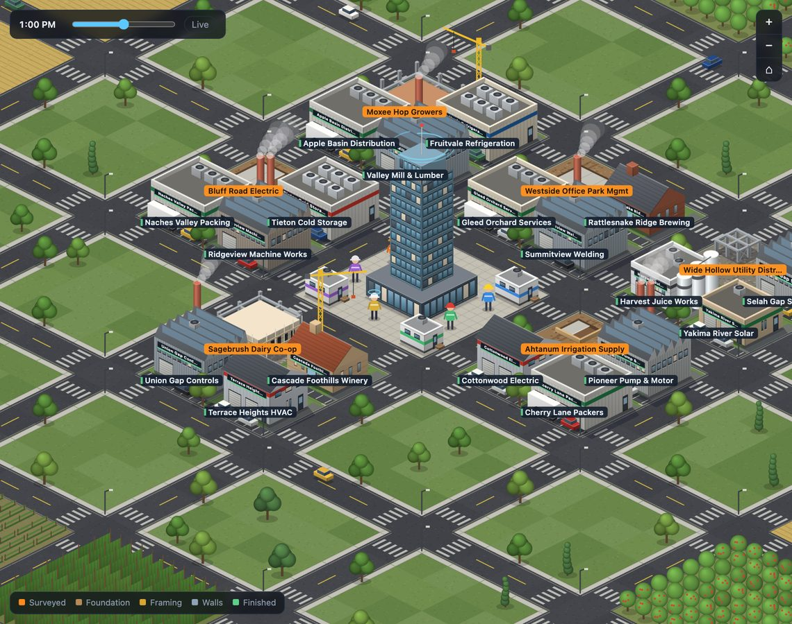
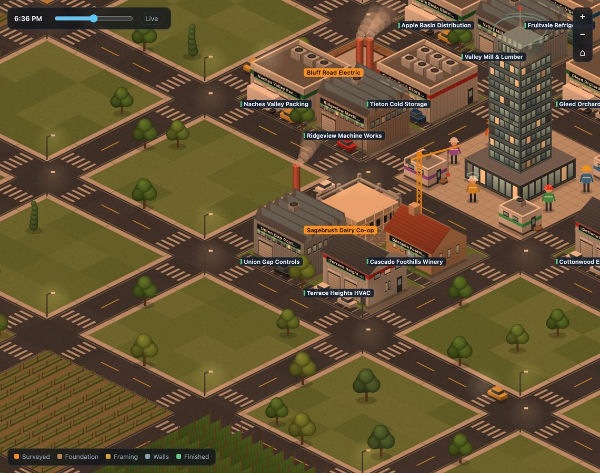
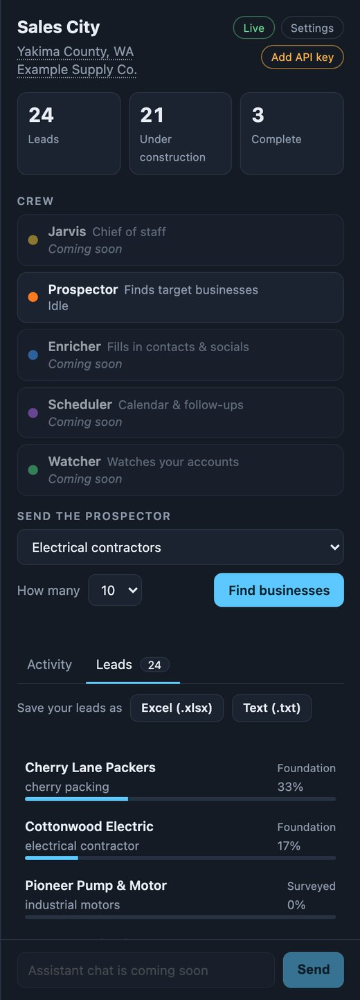

Finds businesses for you
Pick a type, such as electrical contractors, cold storage or machine shops. The Prospector searches the web and collects the names, addresses, phone numbers and websites it actually finds.
Sales City is a Windows app that researches businesses in your county for you: type your ZIP code and it searches that whole county. Each one appears as a lot in a little city and rises from a foundation to a finished building as details are found. When you're ready, save the list to Excel.
See the 4 easy install steps · free to download

Pick a type, such as electrical contractors, cold storage or machine shops. The Prospector searches the web and collects the names, addresses, phone numbers and websites it actually finds.
Ask in plain English, such as "find 10 HVAC contractors" or "give me my morning briefing". Jarvis suggests what to do and roughly what it costs, and nothing starts until you press Start.
Every business becomes a building lot. As more details are filled in, it goes from staked-out lot to foundation, framing, walls and a finished building with its name on it.
One click saves everything to an Excel workbook, including the web page each detail came from, or to a plain text report you can open in Notepad.
Save your businesses as a file shaped for Salesforce's own import tools and import it yourself. Sales City never connects to Salesforce or asks for your login, so your company's data stays private.


Press Download for Windows above. Your browser may say the file "isn't commonly downloaded". That's expected for a new app. Choose Keep (in Edge: click the … next to the file, then Keep, then Keep anyway).
Double-click the file you downloaded. If Windows shows "Windows protected your PC", click More info, then Run anyway. This appears because the installer is not yet code-signed, the paid step that removes the warning. It only happens once.
Follow the installer. You don't need administrator rights, and it adds Sales City to your Start menu. The suggested install folder is fine for most people; to put it somewhere else, press Browse and choose a folder you can save files in.
The first time you open the app, it asks for your Anthropic API key. Create one at console.anthropic.com, copy it, and paste it in. Then type a ZIP code in your sales area and the app finds the county to search. You can change it any time.
It appears for any new app that hasn't built up a reputation with Microsoft or paid for a code-signing certificate. It doesn't mean something is wrong. If you'd like to double-check your download, use the checksum below.
Every version has a fingerprint (called a SHA-256 checksum). Open PowerShell in your Downloads folder and run:
Get-FileHash .\SalesCity-Setup.exe -Algorithm SHA256
The result should match this: (shown here once a version is published)
The app checks for updates every time it opens and asks whether you'd like to install one. Say yes and it does everything for you, then reopens with your leads and settings intact. If you said "Not now", open Settings in the app and choose Updates at any time. If you installed a version older than 0.3.0, download the newest installer from this page once; after that, updates are automatic.
Open Windows Settings, then Apps, choose Sales City and click Uninstall. You'll be asked whether to keep or delete your saved leads and settings.
Whoever manages your Anthropic account can turn it on in the Anthropic Console under Settings, then Privacy.
In a folder on your PC at %LOCALAPPDATA%\SalesCity. Use the Leads tab to save a copy as Excel or text.